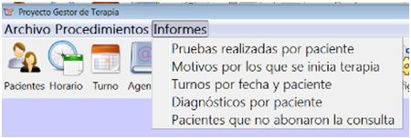
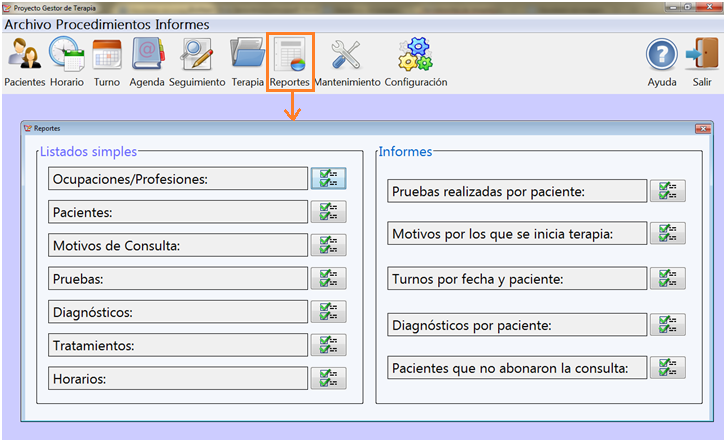

Al seleccionar la sección Informes de la barra superior del programa se puede acceder a las opciones de Reportes con las que cuenta el sistema.

Se pude acceder a los listados simples e informes del sistema por medio del Botón "Reportes".
